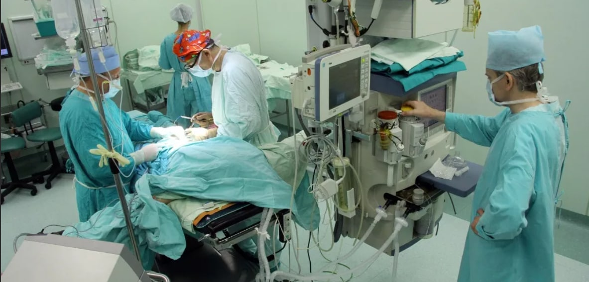

ДОСТИЖЕНИЯ БЕЛОРУССКОЙ МЕДИЦИНЫ
Первое место в мире по доступности медицинской помощи
Сегодня в РНПЦ "Мать и дитя" привозят самых тяжелых пациентов со всей страны
Немаловажно, что здесь созданы все условия для комфорта рожениц. Рядом всегда могут находиться друзья и родные. Организовывают и партнерские роды. В реанимацию к недоношенным детям молодых мам пускают ежедневно. Этот малыш весит 900 граммов. Он будет находиться в специальном кювезе, пока не научится самостоятельно дышать и не наберет еще 600 граммов. Когда вес достигнет полутора килограмма, его переложат в обычную кроватку. Вообще здесь выхаживают детей от 500 граммов. А некоторые процедуры проводят даже до рождения малышей.
Сегодня операции на сердце новорожденных делают уже на первом часу жизни
За четверть века независимости наши неонатологи научились лечить все известные формы врожденных пороков сердца - а их 250. Совсем недавно впервые провели трансплантацию главного органа 10-летней девочке. Это самая маленькая пациентка, которой пересадили сердце. И все же главным достижением белорусских кардиологов принято считать даже не многочисленные пересадки. Гордятся тем, что многие операции научились делать без скальпеля, или на языке докторов -малоинвазивными. Ведь после таких вмешательств пациенты могут вернуться к своей обычной жизни буквально через пару дней.
Основными принципами профилактической направленности являются:
Хирургия и трансплантация органов - то, чем славятся наши врачи на весь мир
Достаточно сказать, что экспорт услуг профильного столичного центра за десятилетие вырос в 42 раза! Число операций приближается к пяти тысячам. Но главным своим достижением наши врачи считают даже не это. А то, что после пересадок женщины рожают абсолютно здоровых малышей! В Беларуси, кстати, живет единственная в мире женщина, которая родила уже двоих после сложнейшей пересадки печени вместе с почкой. Нашу страну периодически находим в различных показательных рейтингах. По комфорту материнства и детства - в тридцатке стран мира. Белорусы - бесспорные аутсайдеры младенческой смертности. Ее уровень - один из самых низких в Европе. И это, как показал минувший год, исторический рекорд для наших медиков, которые сегодня спасают даже самые крохотные жизни.
В прошлом году белорусские трансплантологи отметили 10 лет с того дня, как впервые пересадили печень
Сейчас эта операция доведена до автоматизма. Ежегодно в нашей стране проводят около 70 трансплантаций печени в год. Беларусь уже много лет не покидает первые строчки в топе стран с развитой трансплантологией. Освоены также повторные пересадки и мультитрансплантации (одновременно нескольких органов). Неслучайно в нашу страну ежегодно приезжают на учебу доктора со всего мира. И пациенты, которые, может быть, и не знают русский язык, но могут с уверенностью назвать Беларусь местом своего второго рождения. И ведь даже тех, кто появляется на свет раньше срока с экстремально низкой массой тела, как правило, удается выходить. Эти и многие другие успехи Беларуси замечены Всемирной организацией здравоохранения. Не раз европейское бюро ставило Беларусь в пример. За этой высокой оценкой - огромный труд и самоотдача тысяч специалистов самого высокого класса, для которых борьба за жизнь и здоровье людей стала делом всей жизни.